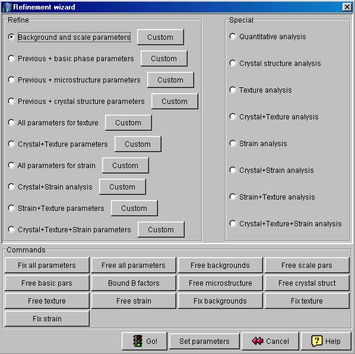
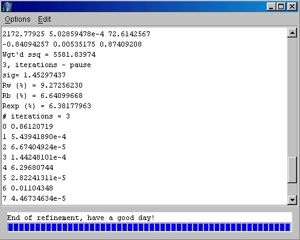

Starting the analysis (step 6)
- We are now ready to start the quantitative analysis.
- Save the analysis with a name using the 'Save as' option from the 'File' menu. Put a
name like "AlZr.par" in the "File name" field. DON'T FORGET THE
FILENAME EXTENSION ".par"! The program won't set it automatically.
- In the menu bar click again on the 'Refinement' option and then on 'Wizard'. A new
window called "Refinement wizard" will appear, showing many option buttons.

Refinement wizard panel
Rightside, in the "Special" panel, choose the option "Quantitative
analysis". Then click on the 'Go!' button and calculations will start
up. A new frame
containing information about calculations progress will show up. Wait until the message
"End of refinement, have a good day!" at the bottom of the textbox will appear.

Calculations progress frame
- Don't close the frame! It is useful to have an idea on how the analysis worked out. The
most important parameters are the final Rw and sigma values. They tell
the goodness of your fitting. For this analysis, you should have something like (look at
the upper figure):
Rw= 9.2...
sig= 1.4...